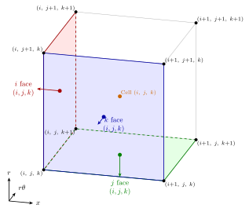
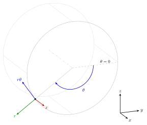

Geometry and indexing¶
Indexing¶
For a block whose nodes have shape (ni, nj, nk), all arrays take
one of five shapes depending on where the quantity is located.
Location |
Shape |
Description |
Examples |
|---|---|---|---|
Node |
|
Vertices at corners of cell control volumes |
Coordinates,
conserved variables
|
Cell |
|
Hexahedral cell |
Volumes,
residual
|
\(i\)-face |
|
Constant-\(i\) boundaries of each cell |
Face areas,
fluxes
|
\(j\)-face |
|
Constant-\(j\) boundaries of each cell |
Face areas,
fluxes
|
\(k\)-face |
|
Constant-\(k\) boundaries of each cell |
Face areas,
fluxes
|
The indexing conventions are illustrated graphically in the following diagram, showing node, cell, and face indices for a single hexahedral cell.
{kind=link}

Multi-component quantities append a trailing dimension so that the
each component is contiguous in memory with Fortran column-major ordering.
For example, nodal velocity vector
has shape (ni, nj, nk, 3) with the coordinate direction on
the last axis, and cell residuals have shape
(ni-1, nj, nk, 5) with the equation index on the last
axis.
Coordinate system¶
Grids are described in cylindrical polar coordinates \((x, r, \theta)\) where \(x\) is the axial direction, \(r\) the radial direction, and \(\theta\) the circumferential angle measured clockwise when looking upstream, giving a left-handed system opposite to the right-handed convention common in general CFD codes. A consequence is that cell volumes computed from the divergence theorem are positive when the index triple \((i, j, k)\) is a left-handed set, i.e.when \(i\), \(j\), and \(k\) increase in the \(x\), \(r\), and \(\theta\) directions respectively. The polar system is related to a standard right-handed Cartesian frame by
so that the \(\theta = 0\) datum lies along \(+y\) and the minus sign on \(z\) produces the clockwise sense of increasing \(\theta\), as illustrated in the diagram.
{kind=link}

Face areas¶
A face of a hexahedral cell is a quadrilateral with four corner nodes \(A, B, C, D\), which in general are not coplanar. Its area vector \(\delta\mathbf{A}\) is defined so that each component is the signed area of the projection of the quadrilateral perpendicular to that component’s direction.
First, we convert to pseudo-Cartesian coordinates. Subtract the mean angle of all four nodes so that \(\theta\) is measured from the centre of the face. This allows us to locally linearise the circumferential direction with by replacing \(\theta\) with \(r\theta\) to give a pseudo-Cartesian coordinate system and use standard vector operations. Then, we cross the diagonals of the quadrilateral to get the area vector.
Note that the sign convention is index-aligned. For example, \(\delta\mathbf{A}_i\) is positive when the face normal points in the increasing \(i\) direction. The area vector is shared between cells and so is not outward with respect to any particular cell.
Cell volumes¶
Cell volumes are obtained from the divergence theorem applied to the vector field \(\mathbf{F} = (x,\, r/2,\, r\theta)\), for which \(\nabla \cdot \mathbf{F} = 3\) in cylindrical coordinates. The angle \(\theta\) in \(\mathbf{F}\) is measured from the mean angle of the eight corner nodes of the cell. Although the origin of \(\theta\) is arbitrary, this choice reduces round-off error and guarantees that the volume is independent of circumferential shifts of the cell.
The volume of a cell is
where \(\mathbf{F}\) is evaluated at the face centre, taken as the average of the four corner nodes of each face, and the superscripts \(\mp\) denote the lower and upper face of the cell in each index direction. The lower face contributions are subtracted because, by the convention of the previous section, every \(\delta\mathbf{A}\) points along the increasing index direction and so the lower face vectors point into the cell rather than out of it.